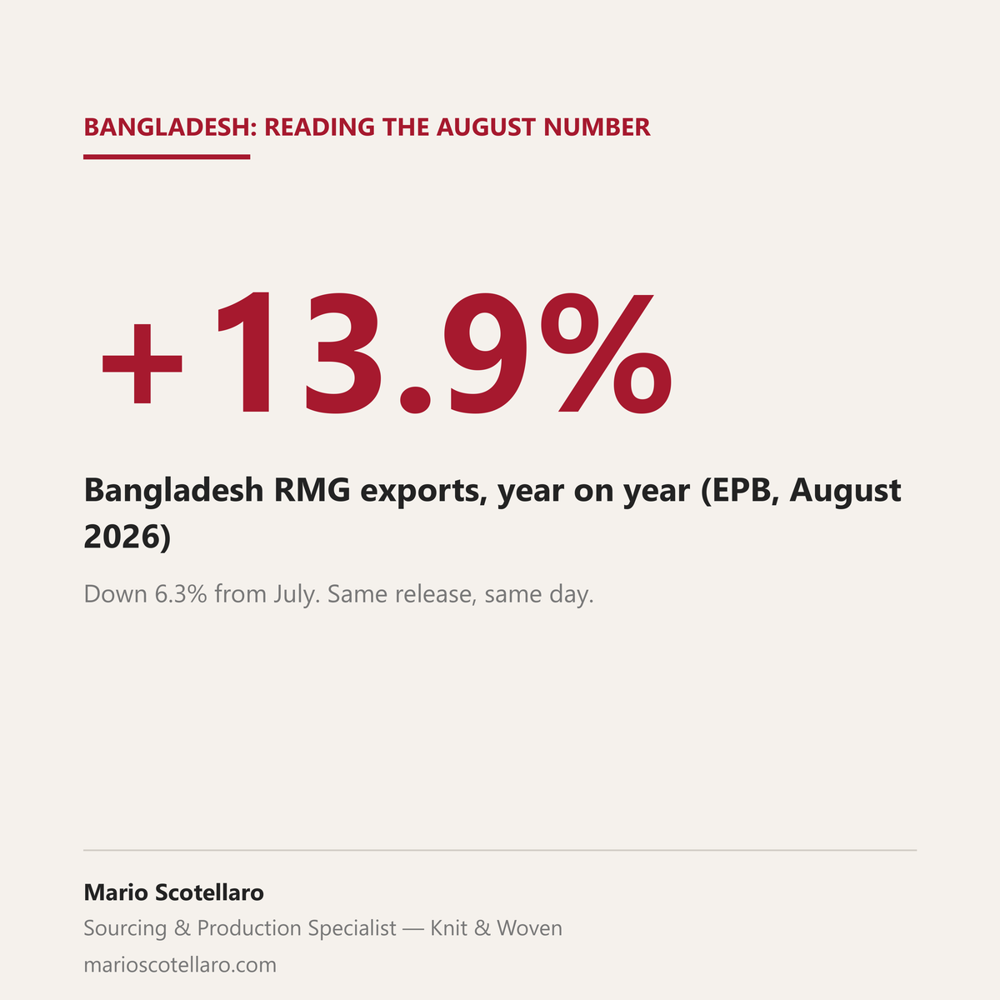

Bangladesh had a strong August, according to the Export Promotion Bureau. Exports were $4.43 billion, up 13.14% on last year. Garments were $3.89 billion, up 13.92%. Knitwear grew 14.88%, woven 12.70%. The United States, still the biggest market, bought 26.09% more than in August 2025.
Three things sit under that number, and they change what it means.
First, the month it is compared to was a weak one. BGMEA president Mahmud Hasan Khan said this himself: in August 2025 the US reciprocal tariffs cut shipments to America by 3% and to Europe by 10.43%. Growing 13.9% against a bad month is a recovery, not a boom.
Second, in real terms August was down, not up. EPB data shows exports fell 6.30% from July, which closed at $4.72 billion. The year on year number goes up. The month on month number goes down. If you are planning capacity, the second one is the one to work from.
Third, the two month total is much quieter than the single month. Since the fiscal year started, knitwear is up 6.17% and woven 3.81%. That is a normal year.
So August was not a bad month. It was a normal month that looks bigger than it was because of what it is compared to.
That is worth getting right if you are working on knit programs in Dhaka for spring summer 2027. A headline like this gets read fast on both sides of the table. A brand can read it as a capacity squeeze and rush a decision. A factory can read it as a recovery that will hold and plan its year on it. The release says something quieter than both: demand came back against a weak month, and the underlying pace over two months is normal.
Numbers like these are worth more when the brand and the factory are looking at the same ones before they talk about price and delivery.
Sources: Export Promotion Bureau data via The Business Standard, 1 September 2026 · BSS, 1 September 2026 · The Daily Star, 2 September 2026, on the month on month fall